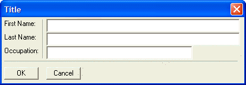

Lines
Lines are similar to frames, except that one of the dimensions for rows or columns is set to zero.
The syntax for a horizontal line is:
{Line=columns,0}; |
The syntax for a vertical line is:
{Line=0,rows} |
The following script shows both vertical and horizontal lines:
result = ui_dlg_box("Title",<<%dlg% {region} First Name: |{line=0,4}{sp=.75}[.64filename]; Last Name: |{sp=.75}[.64filename]; Occupation: |{sp=.75}[.48filename]; {line=2,0}; {endregion}; {region} <10OK> <10Cancel> {endregion} %dlg% ) |
This script creates this dialog:

Lesson 3: Lines
The vertical line is created using the {line=0,4} command. This creates a line 4 rows high. The horizontal line is created using the {line=2,0} command. This creates a line 2 columns wide. The '|' commands after the "First Name:", "Last Name:" and "Occupation:" static text controls divides the dialog into two columns.
 Note : This dialog uses the {Region} and {Endregion} commands which we will discuss later. It also uses the {sp=number} command to insert a fractional space (in this case .75 of a standard one character space) in front of the cells. We will discuss the {sp} command later.
Note : This dialog uses the {Region} and {Endregion} commands which we will discuss later. It also uses the {sp=number} command to insert a fractional space (in this case .75 of a standard one character space) in front of the cells. We will discuss the {sp} command later.
Next
Limitations
Desktop applications only.